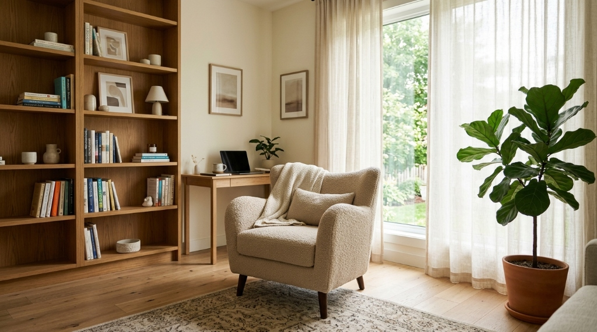

Um espaço confidencial e sem julgamentos para você superar a ansiedade, curar feridas emocionais e reencontrar clareza em suas decisões.
Diretora Clínica
Dra. Helena Vasconcelos
Especialista em TCC & Terapia de Aceitação e Compromisso
Ambiente 100% protegido e ético pelo CFP.
Terapia Cognitivo-Comportamental (TCC).
Profissional graduada e pós-graduada.
Manhã, tarde, noite e sábados.
Recibo detalhado para seu convênio.
Cada ser humano é único. Desenvolvo um plano terapêutico personalizado com metas claras e acolhimento contínuo.
Aprenda ferramentas práticas da TCC para desarmar pensamentos catastróficos, taquicardia, falta de ar e crises de pânico, recuperando o controle da sua rotina.
Resgate o sentido da vida, a motivação diária e a vitalidade emocional por meio de ativação comportamental, autocompaixão e suporte contínuo.
Para executivos e profissionais sob alta pressão: estabeleça limites saudáveis, supere o esgotamento mental e equilibre alta performance com saúde psíquica.
Restaure a comunicação afetiva, resolva conflitos repetitivos, cure feridas de quebra de confiança e fortaleça a cumplicidade do relacionamento.
Liberte-se da autocrítica excessiva, da necessidade de validação e da síndrome do impostor para construir uma relação genuína e segura consigo mesmo.
Sessões com a mesma eficácia científica no conforto da sua casa ou trabalho. Perfeito para expatriados e brasileiros no exterior via plataforma criptografada.
Responda a 3 perguntas rápidas para receber uma indicação direta da Dra. Helena no WhatsApp.
Atendimento sigiloso. Resposta média em menos de 15 minutos.

Ambiente Seguro
Acústica projetada para total privacidade e poltronas ergonômicas relaxantes.
Sou a Dra. Helena Vasconcelos (CRP 06/148920), psicóloga clínica formada pela Universidade de São Paulo (USP) e especialista em Terapia Cognitivo-Comportamental e Terapia Focada na Compaixão.
Meu trabalho não é ditar como você deve viver, mas fornecer o mapa e as ferramentas científicas para que você enfrente seus medos, reconstrua sua autoestima e encontre paz mental.
Formação sólida em Psicologia
Terapias de 3ª Geração (ACT/DBT)
Espaço inclusivo e seguro
Autorizada para atendimento online
Onde a dor está pesando na sua vida? Passe o mouse ou toque nas 5 bolhas pulsantes nos galhos para ver uma breve explicação de cada desafio e como a psicoterapia atua na raiz do problema.
Sensação constante de sobrecarga mental, esgotamento físico que não melhora com o descanso, insônia e distanciamento afetivo. Na psicoterapia, reestruturamos seus limites, fortalecemos sua autonomia e restabelecemos a regulação do estresse.
Relatos reais com nomes resguardados para respeitar rigorosamente o sigilo e a privacidade dos nossos pacientes.
"Cheguei à clínica no auge de crises de ansiedade que me impediam de dirigir e trabalhar. Em poucos meses de TCC com a Dra. Helena, aprendi a reconhecer os gatilhos e recuperei a tranquilidade que não sentia há anos."
M. S. • 34 anos
Advogada • Atendimento Online
"A terapia de casal salvou nosso casamento. Não sabíamos mais conversar sem que virasse uma discussão. O consultório nos Jardins é extremamente acolhedor e a condução da Dra. Helena foi impecável e neutra."
R. & C. • Casados há 8 anos
Empresários • Atendimento Presencial
"Moro no Canadá e precisava de uma psicóloga brasileira com abordagem moderna para tratar Burnout. A facilidade do atendimento online e a pontualidade impecável fizeram toda a diferença na minha recuperação."
G. L. • 29 anos
Engenheiro de Software • Toronto/CA
Tudo o que você precisa saber antes de iniciar sua jornada psicoterapêutica.
Agende uma conversa inicial e tire todas as suas dúvidas diretamente com a psicóloga sem nenhum compromisso.
Ambiente acolhedor, sigilo ético absoluto e abordagem baseada em evidências científicas.
Espaço terapêutico acolhedor e seguro com psicoterapia para ansiedade, estresse, autoconhecimento e desenvolvimento emocional.